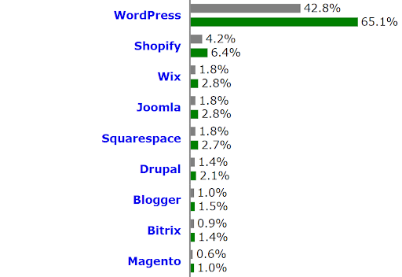

WordPress Security Guide: Best Practices & Tips to Secure Your WordPress Site?
WordPress is the most popular content management system (CMS), opted by nearly 43% of the total websites on the internet today. Because of its popularity, it is also the preferred target for hackers. This has made WordPress security a big concern for thousands of site owners globally. If you are using WordPress or looking to run your site on this CMS, then you must know how to secure WordPress website from hackers and malware.
It is because if you don’t pay heed to the security of your site, it might become vulnerable to various sorts of cyberattacks. Regardless of the type of content you publish or the traffic numbers, the WordPress security issues remain the same.
This is a must-read WordPress security guide for everyone who owns a WP site and is serious about it. Read on to understand how secure is WordPress, primary vulnerabilities,tips and best practices on how to secure WordPress website, as well as the right plugins to make your WordPress site more secure.